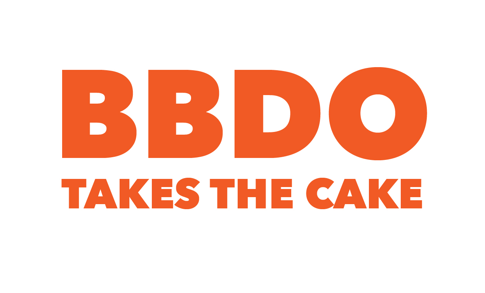

Featured Award:
If you think you've never heard of the ad agency BBDO, you're probably wrong. Their flare for advertising has reached far and wide, from online to on the TV to print to pretty much everywhere. BBDO has had more than their fair share of success recently, winning a handful of ADDY awards in 2015 and still going strong. One of their most recent campaigns was for Campbell's soup, where each can was given a different "can costume."
BBDO is also the genius behind the commercials for Snicker's that you've probably seen before, that claim "you're not you when you're hungry." Part of this brand stream included creating a massive billboard in New York pointing to several nearby apartments and making jokes out of the inhabitants. One caption reads "thought that was the rent for the year, not for the month" with an arrow pointing at a neigboring window to a resident's apartment. At the bottom, the billboard reads "you make dumb decisions when you're hungry." Clearly, BBDO has been eating their snicker's bars, because they have yet to make dumb company decisions.
Students Combine Design and Music, Blow Professionals Away
Recently, students from Bezalel Academy of Arts and Design Avi Naim and Adar Rom coded a frame-by-frame short animation that combines both design and music, and has many professionals wondering where these kids came from and how to give them a job! The animation has won recognition from Communication Arts, a popular design magazine.
Web Awards
Every day the world wide web is getting bigger and bigger as more and more people add their voices to the online community. Some do it better than others. A website called awwwards sees to it that the best and brightest of websites get recognized for the contribution they make. You can also vote for your favorite site! Check out awwwards's website to get inspired by beautiful websites, and vote on your favorites!
Razorfish Global CCO Voted Influencer of the Year
The global CCO of razorfish, Daniel Bonner, was voted by Creativepool to be the 2016 influencer of the year. This comes with little surprise as razorfish has won numerous ADDY awards in previous years, bringing them to the spotlight in the world of advertising. Creativepool hands out awards every year ranging from top influencer, to awards in photography, animation, graphic design, and many more. Check out all of last year's winners here!